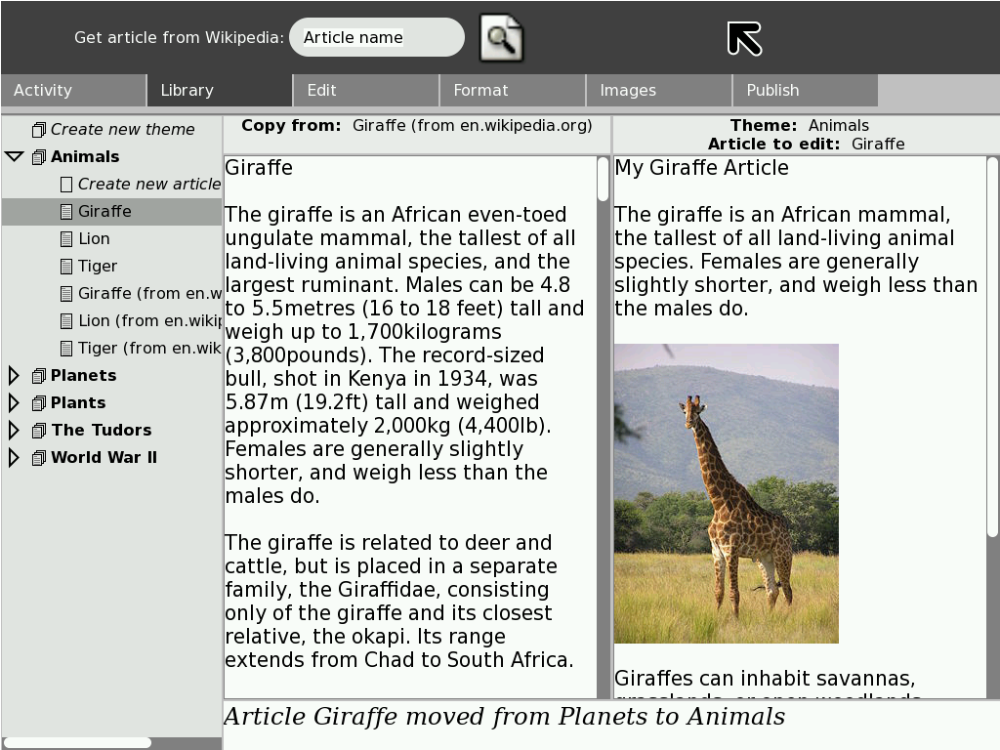
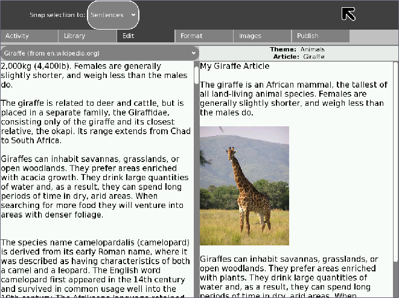
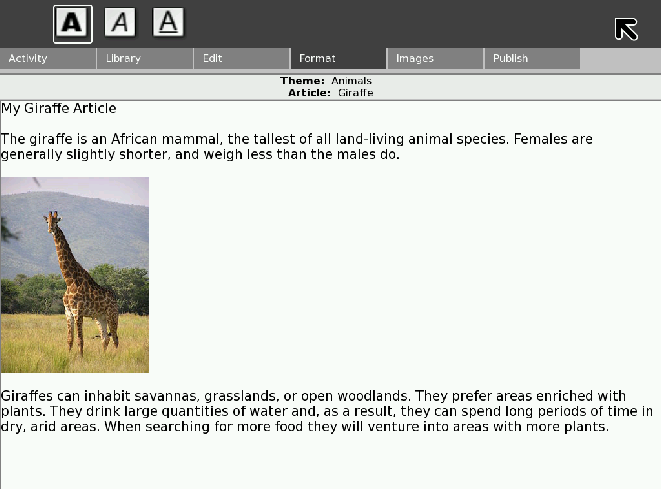
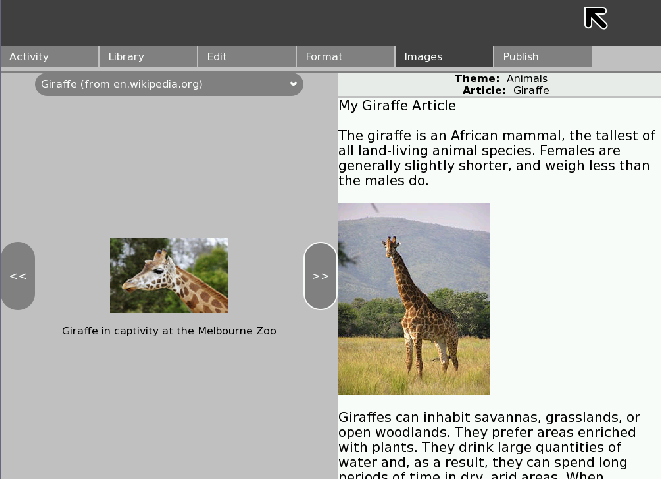
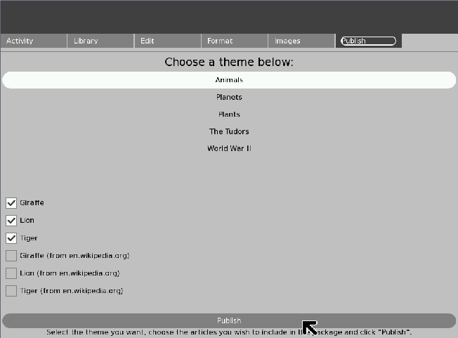
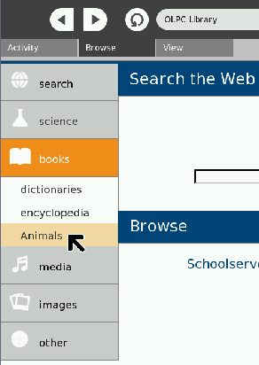
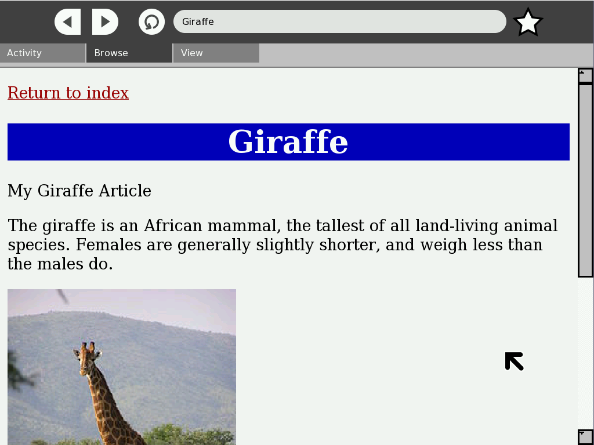

Info Slicer¶

InfoSlicer is an open source tool to enable teachers to quickly and easily select web-based content to edit, package, and distribute as teaching materials.
Info Slicer: an overview¶
InfoSlicer is a tool for aggregating content off of the Internet, rearranging and creating new content, and then publishing this content. The basic element of InfoSlicer is an article. This can correspond to anything: a page from Wikipedia; a news article; or a story downloaded from the WWW. Any content which can be displayed online could be represented as an article.
The prototype version of InfoSlicer gives users the option of downloading articles from Wikipedia. There are a number of stages during which users can slice content from these articles into their own articles. They can format the article and insert images. Articles can then be arranged into themes. (A theme is a collection of articles all based around the same topic. For example, a theme entitled “Animals” could contain articles on “Lion”, “Tiger”, “Giraffe” etc.)
Once the user has created their own content and arranged it into themes, they can publish this content as a Sugar library package (.xol file) which automatically gets picked up by the Browse activity on the same laptop and added to the off-line content available. The .xol file is also available in the Journal so that the user can copy it to a USB stick for sharing on other laptops or uploading to a server.
The Sugar interface is the GUI originally designed for the One-Laptop-per-Child XO-1 laptop. Sugar is bundled with most major GNU/Linux distributions and hence it is possible to run Sugar on almost any computer. Sugar has a very distinct look and feel, and some specific interaction style guidelines. When the user is running the Sugar environment, publishing creates an entry in the sugar Journal, and adds a “Book” to the Browser application.
Where to get Info Slicer¶
Info Slicer activity is available for download from the Sugar Activity Library: Info Slicer
The source code is available on GitHub.
The Info Slicer User Interface¶
All of the screenshots are based on the Giraffe Wikipedia article at http://en.wikipedia.org/wiki/Giraffe in September 2008.
The screenshots have not been updated for recent versions of InfoSlicer, such as InfoSlicer 8, and have more tabs. Use these screenshots as a guide only.
The Library Pane¶
The Library pane deals with the creation, saving, loading and organising of articles.


The tree-view on the left hand side of the diagram shows the articles and themes. The article that is highlighted is the “Giraffe” article, which is in the “Animals” theme. There is a status bar at the bottom of the page.
In the toolbar at the top of the page, there is a search dialog, which will download and save articles from Wikipedia into the currently selected theme.
Users can drag articles from the tree on the left into the two main text boxes in the middle of the screen. The two text boxes represent a “source” article, from which content can be copied, and the user’s version of the article.
The user selects which article is to be used as the source, and which article is to be edited. They would then proceed to the edit pane.
The Edit Pane¶
The edit pane is the first place the user would go after selecting articles in the library pane. It allows dragging and dropping from the source article into the destination article. There are various levels of selection snapping available to make the copying as simple as possible.


The source article is displayed on the left, and the user’s editing version is displayed on the right. The user can select text on the left but editing is disabled. There is a drop-down menu for users to select different source articles from the theme they are currently working in.
The Format Pane¶
The format pane only deals with the user’s working version. It gives them a standard formatting toolbar and they can apply formatting like they would in any regular text editor. Most of the formatting options are disabled in the prototype InfoSlicer tool.


The Images Pane¶
The images pane loads the images associated with an article. In the prototype tool, when articles are downloaded from Wikipedia, the associated images are also downloaded. The user is presented with a view very similar to the Edit pane, except instead of viewing the text of the source article, they see the images.


Much like the Edit pane, there is a drop-down menu for users to change article to other articles in the current theme. Clicking and dragging an image from the left will allow users to insert the image and caption into their article. The example shows that an image of a giraffe has been inserted.
The Publish Pane¶
The Publish pane allows users to select articles within a theme to publish. Clicking the publish button will then perform the platform-specific publishing action, as detailed in the InfoSlicer overview.


Output¶
On the Sugar platform, publishing content results in a book being added to the browse application.

Clicking on the book brings up the index web page. In a Windows or Linux environment, the user would double-click on the output file, which would open the same page below but in their default browser.


Future directions¶
Here are some of the ideas we had for features that would make InfoSlicer better.
Content sources¶
For testing purposes, we have been using MediaWiki-based websites as our primary data source. This has been useful because it reduces licencing issues and presents data in a uniform format. However, particularly in more developed countries, there are already established teaching resources websites which teachers would prefer to use as their primary data source. As such, the tool could be extended to take from these sources.
Similarly, teachers already possess and distribute materials in other data formats such as PDF and Word documents. The tool could also be extended to process these data formats.
If the generic HTML parser could be improved, it would be useful to provide browser integration whereby teachers could perform a 1-click download using a plug-in to their favourite browser. The plug-in would automatically process and store the data ready for off-line use in the application.
Adding images from the Journal¶
You can include any of the images in the downloaded Wikipedia pages in the articles you create. It would be handy to be able to pull in images from your own library (i.e. the Journal, in the Sugar environment).
Language¶
Given the variation in the number of articles available in the different language Wikipedia sites, providing automatic translation into the teacher’s language would greatly increase the range of data available. For example, the Afrikaans Wikipedia has around 10,000 articles, whereas the English Wikipedia has around 2,500,000 articles.
Thesaurus and spell-check¶
It would also be useful to incorporate a thesaurus to make it easier for teachers to substitute complex language with words more suited to the children’s level. Spell-checking is also an obvious inclusion that would be welcomed.
Content distribution¶
At the moment, the tool does not utilise the mesh networking available on the One Laptop Per Child laptops. This would be an easy and effective way of distributing the teachers’ content in a peer-to-peer fashion, without relying on other devices such as USB sticks, school servers, or web sites.
Collaboration¶
The application could be enhanced with the use of collaboration tools such as comment posting, in order to allow students to share their thoughts and views on the published material. This could also allow teachers to collaborate on content both on a local network and on the internet as a whole.
Deleting files when no longer required by the user¶
Deleting downloaded image files presents a problem, as they may be referenced by several user-generated articles. As such it is not feasible in the current implementation to remove images and guarantee link integrity. In future versions of the application, this could be solved by implementing more advanced data-tracking tools.
Attribution¶
Currently the article meta-model includes meta data about the source of the content that is used in an article, even as you cut-and-paste and chop and change. However, this attribution does not appear in the published articles. This would be an enhancement to the publishing part of the application, and could either be done as footnotes in the articles, or as a separate HTML page in the .xol, which would be distributed with the package and can be linked-to from the articles.
Interaction with the Library¶
The Library has no real precedent in the Sugar environment and feedback from users suggested that that part of the application would benefit from some re-design work to make it more intuitive.
Where to report problems¶
Please report bugs and make feature requests at infoslicer/issues.